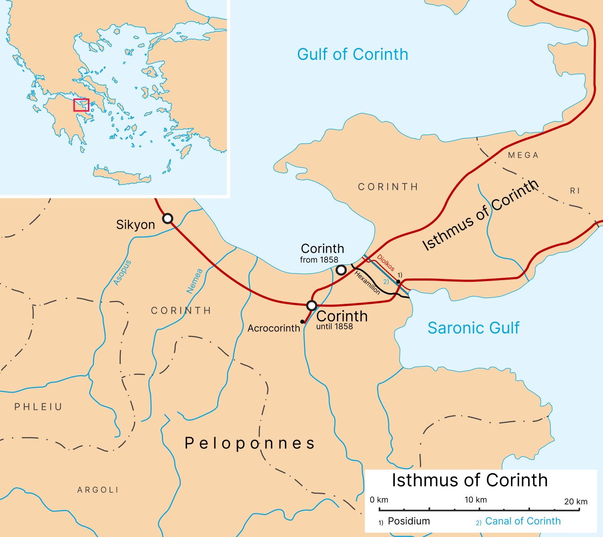

Sessão 1: Contexto e Resumo da CartaSession 1: Background and Summary of the Letter
Pontos-ChaveKey Takeaways
- Os escritores de epístolas do Novo Testamento se dirigem a igrejas em cidades ou regiões geográficas específicas, cada uma com seu próprio caráter, problemas, questões culturais, forças e fraquezas.The New Testament epistle writers address churches in specific cities or geographical regions, all of which have their own characters, problems, cultural issues, strengths, and weaknesses.
- O objetivo de Paulo na carta é levar a igreja coríntia à maturidade em seu pensar e em suas práticas.Paul’s aim in the letter is to bring the Corinthian church to maturity in its thinking and practices.
- Culturas de honra-vergonha, como a da igreja coríntia, enfatizam tradição, relacionamentos e hierarquia.Honor-shame cultures, like that of the Corinthian church, place particular stress on tradition, relationships, and hierarchy.
- A igreja em Corinto reverteu a normas culturais de tradição, relacionamento e hierarquia, o que também significa segregação e divisão.The church at Corinth has reverted to cultural norms of tradition, relationship, and hierarchy, which also means segregation and division.
Contexto e Resumo da CartaBackground and Summary of the Letter
Toda a Escritura foi escrita em um lugar e tempo particulares, por pessoas particulares, e é reveladora para entendermos a natureza de Deus e seus propósitos. Assim, o que lemos na Bíblia é tanto particular ao seu tempo quanto de importância universal.All Scripture was written in a particular place at a particular time by particular people. And all of Scripture is revelatory for us to understand the nature of God and his purposes for his people. So what we read in the Bible is both particular to its time and has universal import.
Mas a revelação de Deus vem até nós no e através do particular, apresentada por uma lente cultural existente. Isso é verdade em 1 Coríntios, e talvez mais do que em outros textos.But God’s revelation comes to us in and through the particular, presented through an existing cultural lens. This is true of 1 Corinthians, and perhaps even more so than with other texts.
As epístolas são escritas a igrejas específicas em cidades ou regiões geográficas específicas, cada uma com seu próprio caráter, problemas, questões culturais, forças e fraquezas. Tentar entender algumas dessas coisas é um desafio enquanto juntamos as pistas do texto.Epistles are written to specific churches in specific cities or geographical regions, all of which have their own characters, problems, cultural issues, strengths, and weaknesses. Attempting to understand some of these is a challenge for us as we piece together clues from the text.
Aproximando-se do Texto: Lendo uma CartaApproaching the Text: Reading a Letter
Para entender o que esta carta muito específica, escrita a um grupo de pessoas há 2.000 anos, poderia dizer a nós, precisamos situar a carta em seu próprio contexto. Isso é verdade de toda a Escritura, mas é bastante desafiador com as cartas, porque elas são correspondência.In order to understand what this very specific letter written to a group of people 2,000 years ago might say to us, we need to locate the letter in its own context. This is true of all Scripture, but it is quite challenging with the letters because they are correspondence.
Isso significa que as cartas estão ainda mais especificamente localizadas do que outra literatura bíblica que assume uma audiência mais universal, como Provérbios, Salmos ou os livros históricos. Além disso, temos apenas metade da correspondência ou "conversa" — não sabemos o que foi escrito em resposta ou mesmo primeiro.This means that the letters are even more specifically located than some of the other literature in the Bible that assumes a more universal audience, such as Proverbs, Psalms, or the history books. Also, we only have half of the correspondence or "conversation," so we don’t know what was written in response or even written first.
O processo de ler um texto particular escrito há 2.000 anos em uma língua que nenhum de nós fala, para pessoas que não viviam como nós, e aplicar esse texto a hoje em nossos contextos culturais, requer bastante trabalho!The process of reading a particular text that was written 2,000 years ago in a language that none of us speak to people who didn’t live like us and applying that text to today in our cultural settings requires quite a lot of work!
Devemos situar o texto em seu contexto e tentar descobrir o que ele significava para seus ouvintes originais e como eles o teriam interpretado. Devemos refletir sobre o que o autor poderia ter querido dizer naquela época e como teria sido recebido pelos destinatários. Com base nisso, precisamos nos perguntar o que se aplica ou não diretamente a nós. Então, se cremos que algo se aplica, precisamos refletir sobre como isso se manifesta em nosso próprio mundo e o que devemos fazer a respeito.We must situate the text in its context and try to work out what it meant to its original hearers and how they would have interpreted it. We must think through what the author might have meant back then and how it might have been received by the recipients. Based on that, we need to ask ourselves what does and doesn’t apply directly to us. Then, if we believe something does apply, we need to think through what that looks like in our own world and what we should do about it.
O Processo HermenêuticoThe Hermeneutical Process
Tradução, interpretação, recepção e aplicação.Translation, interpretation, reception, and application
O processo hermenêutico acontece em dois níveis — como esse processo ocorreu no mundo antigo (ou seja, como Paulo escreveu e os coríntios receberam e aplicaram a carta) e no mundo moderno (ou seja, como nós interpretamos, recebemos e aplicamos a carta) e como os dois se intersectam.The hermeneutical process happens on two levels—how this process was undergone in the ancient world (i.e., how Paul wrote and the Corinthians received and applied this letter) and the modern world (i.e., how we interpret, receive, and apply this letter) and how the two intersect.
Podemos intuir que sabemos muito sobre como as pessoas nas primeiras igrejas viviam, mas na verdade sabemos muito pouco de suas vidas diárias. Assim, juntamos as peças como um quebra-cabeça.We might intuitively feel that we know a lot about how the people in the first churches lived, but in fact, we know very little of their day-to-day lives. So we piece things together like a puzzle.
Para montar o quebra-cabeça, usamos erudição e nossa imaginação, construindo um pano de fundo a partir de descobertas históricas e arqueológicas, bem como de referências cruzadas a outros textos, o que nos ajuda a dar sentido a esse texto.And in order to piece the puzzle together, we use scholarship and our imaginations. We construct a background from historical and archaeological discoveries as well as cross-referencing to other texts, which helps make sense of this text to us.
Porém, não podemos escapar de fazer conexões através do que já sabemos. Lemos os textos através de nosso conhecimento e experiência prévios, então nunca os abordamos sem carga. Por isso falamos de "bagagem".However, we can’t escape making connections through what we already know. We read texts through our prior knowledge and experience, so we never come to them unencumbered. That’s why we talk about "baggage."
Primeiro, todos precisamos admitir que há coisas que traremos ao texto. Precisamos dizer: "Aqui estou eu com meu pano de fundo, minha bagagem, minhas expectativas e minhas ideias preconcebidas ou pressupostos anteriores."First of all, we all need to admit that there are things we’re going to bring to the text. We need to say, "Here’s me with my background, my baggage, my expectations, and my preconceived ideas or prior assumptions."
O que sou propenso a ouvir se sou eu ouvindo o texto? E o que posso perder?What am I likely to hear if it’s me listening to the text? And what might I miss?
O Cenário: Corinto AntigaThe Setting: Ancient Corinth
Paulo se encontrou numa cidade significativa na Grécia, no meio do Império Romano. Corinto ainda existe hoje, embora a nova Corinto fique alguns quilômetros a nordeste da antiga.Paul found himself in a significant city in Greece in the middle of the Roman Empire. Corinth still exists today, although new Corinth is a few miles northeast of old Corinth.
Corinto foi a capital política da província de Acaia no Império Romano. Foi destruída em 146 a.C. por causa de uma rebelião dos gregos e reconstruída por Júlio César 100 anos depois, por volta de 44 a.C., quando foi fundada como colônia romana.Corinth was the political capital of the province of Achaia in the Roman Empire. It was destroyed in 146 B.C.E. as a result of a rebellion by the Greeks and rebuilt by Julius Caesar 100 years later, around 44 B.C.E., when it was founded as a Roman colony.
Os romanos impuseram novos planos urbanos, arquitetura, organização política e ethos. Essas mudanças a tornaram uma cidade muito diferente da época grega. Corinto era geograficamente na Grécia, mas culturalmente romana em sua religião e valores, e se tornou uma terceira cidade estratégica e próspera após Roma e Alexandria.The Romans imposed new city plans, architecture, political organization, and ethos. These changes made it a very different city from when it had been Greek. Corinth was geographically in Greece but culturally Roman in terms of its religion and values, and it became a strategic and thriving third city after Rome and Alexandria.
Como se vê no mapa, estava muito estrategicamente colocada, entre o Peloponeso e a Grécia continental. Corinto controlava o movimento terrestre entre Itália e Ásia, e navios costumavam passar por roletes em vez de fazer a longa rota marítima ao redor. Como porto e centro comercial, havia grande riqueza e também grande pobreza. Além disso, havia também um próspero comércio de prostituição, bem como libertinagem sexual em geral. Era conhecida como lugar de imoralidade sexual.As you can see on the map, it was very strategically placed, located between the Peloponnesus and mainland Greece. Corinth controlled the overland movement between Italy and Asia, and ships used to go through on rollers rather than taking the long water route around. As a port and a trade center, there was great wealth and also great poverty. In addition to this, there was also a thriving trade in prostitution as well as just general sexual license. It was known to be a place of sexual immorality.
Corinto era um porto multétnico e multicultural, e como rota comercial, era uma cidade rica vinda de tarifas e comércio. No século I, Corinto tornou-se o principal centro comercial do sul da Grécia. Também era o local dos Jogos Ístmicos — uma competição atlética bienal que ficava em segundo lugar apenas aos Jogos Olímpicos. Quem eles adoravam?Corinth was a thriving, multiethnic, multicultural port, and as a trade route, it was a wealthy city from tariffs and commerce. By the first century, Corinth had become the foremost commercial center in southern Greece. It was also the site of the Isthmian Games—a biennial athletic competition second only to the Olympian games.
Corinto era influenciada pelo culto imperial (o imperador) e pela adoração pagã (deuses romanos e gregos e o culto egípcio de Ísis).Who did they worship? Corinth was influenced by the imperial cult (the emperor) and pagan worship (Roman and Greek gods and the Egyptian Isis cult).
Corinto era povoada por libertos romanos, gregos indígenas, imigrantes e judeus, mas era uma cidade predominantemente romana. Pessoas vinham a Corinto para se estabelecer e ganhar dinheiro. Não eram a aristocracia do mundo antigo, mas mais "novo dinheiro", pessoas que haviam feito sua fortuna e que estavam subindo a escada social.Corinth was populated by Roman freedmen, indigenous Greeks, immigrants, and Jews, but it was a predominantly Roman city. People came to Corinth to settle and make money. They were not the aristocracy of the ancient world, but more "new money," people who had made their wealth and who were moving up the social ladder.
Contexto Histórico da CartaHistorical Context of the Letter
Três perguntas importantes para situar o texto.Three important questions to locate the text.
- Quando foi escrito?When was this written?
- A quem foi escrito?To whom was it written?
- Por que foi escrito?Why was it written?
Foi definitivamente escrito por Paulo. É uma de suas cartas mais antigas, e foi definitivamente escrito à igreja em Corinto. Atos 18 nos dá algum pano de fundo histórico que nos ajuda a situar a carta.It was definitely written by Paul. It is one of his earliest letters, and it was definitely written to the church in Corinth. Acts 18 gives us some historical background which helps us locate the letter.
- Gálio foi procônsul da Acaia, o que ajuda a datar a carta.Gallio was the proconsul of Achaia, so that helps us to date the letter.
- Paulo passou 18 meses lá em sua segunda viagem missionária em 49-51 d.C.Paul spent 18 months there on his second missionary journey in 49-51 C.E.
- A igreja provavelmente foi estabelecida em fevereiro ou março de 50 d.C. por Paulo, mas Silvano (Silas) e Timóteo também o acompanharam (cf. 1 Ts 1:1; 2 Cor 1:19).The church was probably established in February or March 50 C.E. by Paul, but Silvanus (Silas) and Timothy also accompanied him (cf. 1 Thess. 1:1; 2 Cor. 1:19).
A Congregação de CorintoThe Corinth Congregation
Pensamos que era uma congregação de cerca de 50-100 pessoas, e elas se reuniam em casas.We think it was a congregation of about 50-100 people, and they would have met in homes.
Quando Paulo chegou a Corinto, foi primeiro aos judeus. Ficou com Priscila e Áquila, que também eram fabricantes de tendas como ele e trabalhavam juntos. Como cidade portuária, haveria necessidade de tendas, toldos, velas e reparos. Quando Paulo foi rejeitado pelos judeus, mudou-se para ficar com um cidadão romano, Tício Justo, que era adorador de Deus e cuja casa ficava ao lado da sinagoga (Atos 18:7).When Paul arrived in Corinth, he went first to the Jews. He stayed with Priscilla and Aquila, who were also tentmakers like him and they worked together. As a port city, there would have been a need for tents, awnings, sails, and repairs. When Paul was rejected by the Jews, he moved on to stay with a Roman citizen, Titius Justus, who was a worshiper of God and whose house was next door to the synagogue (Acts 18:7).
Paulo estava no meio de uma metrópole antiga próspera e movimentada. Enquanto pregava o Evangelho aos judeus na sinagoga, irritou alguns dos judeus, que queriam que ele fosse punido por Gálio, mas Gálio recusou. Paulo escapou, e eles espancaram Sóstenes em vez disso. Então o Senhor falou a Paulo em uma visão certa noite e o encorajou a continuar falando e não ficar em silêncio. Ele prometeu a Paulo que seria protegido enquanto estivesse em Corinto, porque o Senhor tinha muitas pessoas na cidade (Atos 18:9-10). Com isso, parece que outros evangelizaram Corinto antes de Paulo — provavelmente Priscila e Áquila?Paul was in the middle of a thriving, ancient metropolis full of hustle and bustle. As he preached the Gospel to the Jews in the synagogue, he aggravated some of the Jews and they wanted him to be punished by Gallio, but Gallio refused. Paul escaped, and they beat Sosthenes instead. Then the Lord spoke to Paul in a vision one night and encouraged him to keep speaking and not stay silent. He promised Paul that he would be protected while he was in Corinth because the Lord had many people in the city (Acts 18:9-10). From this it seems that others evangelized Corinth before Paul—probably Priscilla and Aquila?
Paulo plantou uma igreja multicultural numa cidade multicultural.Paul planted a multicultural church in a multicultural city.
- Judeus: Áquila, Priscila, CrispoJews: Aquila, Priscilla, Crispus
- Romanos: Fortunato, Quarto, JustoRomans: Fortunatus, Quartus, Justus
- Gregos: Estéfanas, Acaico, ErasmoGreeks: Stephanus, Achaica/us, Erastus
Depois de 18 meses, Paulo deixou Corinto e navegou para a Síria com Priscila e Áquila. Desembarcaram em Éfeso, onde ficou por um curto tempo e então partiu, mas prometeu retornar a eles se Deus quisesse. Priscila e Áquila ficaram em Éfeso, e Paulo seguiu para Cesareia, Jerusalém e Antioquia (Atos 18:18-22).After 18 months, Paul left Corinth and set sail for Syria with Priscilla and Aquila. They landed in Ephesus where he stayed for a short time and then left but promised to return to them if God willed. Priscilla and Aquila stayed in Ephesus, and Paul went on to Caesarea, Jerusalem, and Antioch (Acts 18:18-22).
Depois de ministrar às igrejas da Ásia Menor, Paulo retornou a Éfeso, onde ficou por dois anos. Enquanto estava lá, começou a ouvir relatos sobre a igreja coríntia que lhe causaram preocupação. Esses relatos das "pessoas de Clóe" o informam sobre divisões, ciúme, contenda e imoralidade dentro da igreja.After ministering to the churches in Asia Minor, Paul then returned to Ephesus, where he stayed for two years. While he was there, he began to hear reports about the Corinthian church that caused him some concern. These reports from "Chloe’s people" inform him of divisions, jealousy, strife, and immorality within the church.
Paulo já havia escrito a eles (não sabemos quantas vezes), e eles haviam escrito de volta ao menos uma vez (1 Cor 5:9-11). Paulo provavelmente escreveu de volta aos coríntios vindos de Éfeso em algum momento entre 51-55 d.C. (os eruditos não têm certeza do ano exato). Assim, a carta que chamamos de Primeira aos Coríntios é, na verdade, a segunda aos Coríntios, ou talvez até a terceira. Não sabemos ao certo.Paul has already written to them (we don’t know how many times), and they have written back at least once (1 Cor. 5:9-11). Paul probably wrote back to the Corinthians from Ephesus somewhere between 51-55 C.E. (scholars are not sure about the exact year). So the letter we call First Corinthians is actually second Corinthians or maybe even third. We don’t really know.
Paulo está escrevendo esta carta principalmente para corrigi-los tanto em seu pensar quanto em suas práticas. Esta carta teria sido lida em voz alta publicamente para toda a igreja, talvez até várias vezes.Paul is writing this letter primarily to correct them on both their thinking and their practices. This letter would have been read aloud in public to the whole church, maybe even multiple times.
Resumo da CartaSummary of the Letter
O objetivo de Paulo é levar a igreja coríntia à maturidade em seu pensar e em suas práticas.Paul’s aim is to bring the Corinthian church to maturity in their thinking and practices.
O tom de sua carta é uma repreensão severa por seu afastamento do ensino e das práticas originais de Paulo, bem como uma resposta à réplica deles à sua carta original. Paulo está escrevendo a eles a respeito de certas práticas que se tornaram aceitáveis ou normativas em sua ausência, com as quais ele discorda e quer corrigi-los.The tone of his letter is a harsh admonishment for their departure from Paul’s original teaching and practices, as well as a response to their reply to his original letter. Paul is writing to them regarding certain practices that have become acceptable or normative in his absence that he passionately disagrees with and wants to correct them on.
Em sua maior parte, as correções de Paulo não são sugestões brandas, mas diretrizes diretas e autoritativas.For the most part, Paul’s corrections are not mild suggestions but forthright and authoritative directives.
"Toda a primeira epístola foi escrita ... não com tinta, mas com fel. É apaixonada, indignada, escarninha, ameaçadora, áspera; e, com relação a cada uma de suas várias acusações, é dirigida contra certos indivíduos como principais ofensores."Tertuliano (1959). Treatises on Penance. Ancient Christian Writers 28. Paulist. 90-91. "The whole first epistle was written … not with ink but with gall. It is passionate, indignant, scornful, threatening, harsh; and with respect to each of its various charges, it is directed against certain individuals as chief offenders."Tertullian (1959). Treatises on Penance. Ancient Christian Writers 28. Paulist. 90-91.
Gordon Fee também argumenta que 1 Coríntios é mais do que uma correção branda.Gordon Fee also argues that 1 Corinthians is more than a mild corrective.
"[A] linguagem e o estilo de 1 Coríntios são especialmente retóricos e combativos. Paulo os enfrenta em cada turno. Há pouco a sugerir que ele está apenas informando ou meramente corrigindo; em vez disso, ele está atacando e desafiando com todas as armas em seu arsenal literário."Fee, Gordon E. (1991). The First Epistle to the Corinthians. Eerdmans. 5-6. "[T]he language and style of 1 Corinthians are especially rhetorical and combative. Paul is taking them on at every turn. There is little to suggest that he is either informing or merely correcting; instead, he is attacking and challenging with all the weapons in his literary arsenal."Fee, Gordan E. (1991). The First Epistle to the Corinthians. Eerdmans. 5-6.
É incisiva, mas não cruel.It is forceful, but not unkind.
1 Coríntios 4:14-15 NRSV
14 Eu não estou escrevendo isso para vos envergonhar, mas para admoestar-vos como meus filhos amados.
15 Pois, ainda que tenhais milhares de tutores em Cristo, não tendes muitos pais; porque eu gerei-vos em Cristo Jesus pelo evangelho. 1 Corinthians 4:14-15 NRSV
14 I am not writing this to make you ashamed, but to admonish you as my beloved children.
15 For though you might have ten thousand guardians in Christ, you do not have many fathers. Indeed, in Christ Jesus I became your father through the gospel.
Assim, o propósito é adverti-los, salvá-los e trazê-los a um caminho maduro e semelhante a Cristo, onde possam ser verdadeiras testemunhas de Jesus. E Paulo toca em múltiplas questões.So the purpose is to warn them, to save them, and to bring them to a mature, Christ-like path where they can be true witnesses to Jesus. And Paul touches on multiple issues.
- Divisão entre os líderes e a congregação e brigas entre elesDivision among the leaders and the congregation and squabbles between them
- Sua compreensão da cruz e do EspíritoTheir understanding of the cross and the Spirit
- Sua compreensão de apostolado e liderança, autoridade e poderTheir understanding of apostleship and leadership, authority and power
- Sua visão de si mesmos como os espirituais, ou os "cachorros superiores" em termos espirituais, e o que isso significavaTheir view of themselves as the spiritual ones, or the "top dogs" in spiritual terms, and what that looked like
- Sua compreensão de sexo, casamento e solteiriceTheir understanding of sex, marriage, and singleness
- Comida sacrificada a ídolos e visitar templosFood sacrificed to idols and visiting temples
- Sua compreensão e prática de dons espirituais e a obra do Espírito Santo entre elesTheir understanding and practice of spiritual gifts and the work of the Holy Spirit among them
- Disputas legais entre crentes, que levaram a tribunais seculares para arbitragemLegal disputes among believers, which they took to secular courts for arbitration
- Seu tratamento dos pobres e das mulheresTheir treatment of the poor and women
- Sua compreensão da ressurreição, eternidade e o que isso significa para a vida e o cosmos aqui e agoraTheir understanding of the resurrection, eternity, and what that means for life and the cosmos in the here and now
- A relação de Jesus com o Pai, embora a linguagem em 1 Coríntios se refira principalmente a Cristo e a DeusThe relationship of Jesus to the Father, although the language in 1 Corinthians refers mostly to Christ and God
Ele aborda questões teológicas, eclesiológicas, doutrinárias e pastorais. É uma carta extraordinária e uma janela surpreendente para a igreja primitiva e para Paulo. Está cheia de sabedoria, correção, insights e revelação sobre a natureza de Deus, cuidado pastoral e inclui até testemunho pessoal de Paulo.He addresses theological, ecclesiological, doctrinal, and pastoral issues. It’s an extraordinary letter and an amazing window into the early church and into Paul. It’s full of wisdom, correction, insights, and revelation about the nature of God, pastoral care, and even includes personal testimony from Paul.
O livro é cru, real e honesto, e, às vezes, vemos Paulo derramando seu coração. Paulo está dirigindo-se a amigos — pessoas que ele converteu, com as quais viveu por 18 meses, discipulou, formou em liderança — que agora, em sua ausência, saíram dos trilhos de maneiras particulares. Ele quer chamá-los de volta à verdade e à sanidade, e a uma comunidade saudável, funcional, centrada em Cristo e cheia do Espírito.The book is gritty, real, and honest, and, at times, we see Paul pouring out his heart. Paul is addressing friends —people he converted, lived with for 18 months, discipled, raised up into leadership—who now in his absence have gone off the rails in particular ways. He wants to call them back to truth and sanity and to a healthy, functional, Christ-centered, and Spirit-filled community.
O livro é também surpreendentemente contemporâneo. 1 Coríntios toca em questões de autoimagem; identidade; orgulho e insegurança; sexo, casamento e solteirice; liderança; reuniões da igreja; e teologias de homem e mulher.The book is also amazingly contemporary. 1 Corinthians touches on issues of self-image; identity; pride and insecurity; sex, marriage, and singleness; leadership; church gatherings; and theologies of man and woman.
Aborda práticas na igreja, como lidamos com a Ceia do Senhor e dons carismáticos. Explora o que significa amar uns aos outros, bem como questões de desigualdade e injustiça. Cobre grandes questões doutrinárias sobre a natureza de Deus, a Trindade, Jesus Cristo, a cruz e a ressurreição, e a obra do Espírito. 1 Coríntios fala conosco hoje.It addresses practices in church such as how we handle the Lord’s Supper and charismatic gifts. It explores what it means to love one another, as well as issues of inequality and injustice. It covers major doctrinal questions about the nature of God, the Trinity, Jesus Christ, the cross and the resurrection, and the work of the Spirit.
Ele fala em nossas situações, nossas vidas juntas, a maneira como conduzimos nossas igrejas e a maneira como nos tratamos. Tem uma teologia inteira da igreja e de como os cristãos devem ou poderiam se engajar com o mundo.1 Corinthians speaks to us today. It speaks into our situations, our lives together, the way we run our churches, and the way we treat each other. It has a whole theology of the church and how Christians should or could engage with the world.
E a carta conclui com poderosas declarações sobre a centralidade e a não negociabilidade da ressurreição de Cristo. A ressurreição é o fundamento da fé cristã e o fundamento da vida cristã. 1 Coríntios nos dá uma visão totalmente intransigente do que significa declarar que Jesus Cristo ressuscitou dos mortos e que ele só é Senhor. Agora voltamos a um pano de fundo importante.And the letter concludes with powerful statements about the centrality and non-negotiability of the resurrection of Christ. The resurrection is the foundation of the Christian faith and the foundation of the Christian life. 1 Corinthians gives us a totally uncompromising vision of what it means to declare that Jesus Christ is risen from the dead and that he alone is Lord. Now we turn to an important backdrop.
Antes de Começar: Não Podemos Saber TudoBefore We Begin: We Can’t Know Everything
"[Os estudiosos do Novo Testamento] assumem que as crenças e práticas básicas do mundo do primeiro século, dentro do qual os membros da igreja viviam, são relativamente fáceis de estabelecer e descrever, e que, consequentemente, pode-se descobrir com um grau significativo de certeza coisas como as causas do conflito sobre a Ceia do Senhor em 1 Cor 11 ou as origens do desacordo sobre a natureza e a necessidade do corpo da ressurreição em 1 Cor 15."Meggitt, Justin J. (2004). "Sources: Use, Abuse and Neglect: The Importance of Ancient Popular Culture." Christianity at Corinth: The Quest for the Pauline Church. Ed. D. Horrell e E. Adams. Westminster John Knox Press. 242. "[New Testament scholars] assume that the basic beliefs and practices of the first-century world within which the church members lived are relatively easy to establish and describe, and that consequently one can discover with a significant degree of certainty such things as the causes of conflict over the Lord’s Supper in 1 Cor. 11 or the origins of the disagreement over the nature and necessity of the resurrection body in 1 Cor. 15."Meggitt, Justin J. (2004). "Sources: Use, Abuse and Neglect: The Importance of Ancient Popular Culture." Christianity at Corinth: The Quest for the Pauline Church. Ed. D. Horrell and E. Adams. Westminster John Knox Press. 242.
Ele também aponta que dependemos de fontes de elite. "É importante lembrar que, por todas as reivindicações que alguns eruditos fazem, ainda não temos ideia de algumas das características mais básicas da vida grega e romana no primeiro século, como afetaria os coríntios.He also makes the point that we rely on elite sources.
Se não sabemos nem o que um escravo em Corinto vestia, deveríamos realmente ser tão confiantes em assumir que podemos saber o que pensavam ou como poderiam ser esperados a se comportar em diferentes contextos sociais?""It is important to remember that for all the claims some scholars make, we still have no idea of some of the most basic features of Greek and Roman life in the first century as it would affect the Corinthians. If we do not even know what a slave in Corinth wore should we really be so confident in assuming we can know what they thought or how they may have been expected to behave in different social contexts?"
Meggitt, Justin J. (2004). "Sources: Use, Abuse and Neglect: The Importance of Ancient Popular Culture." Christianity at Corinth: The Quest for the Pauline Church. Ed. D. Horrell e E. Adams. Westminster John Knox Press. 252. Meggitt, Justin J. (2004). "Sources: Use, Abuse and Neglect: The Importance of Ancient Popular Culture." Christianity at Corinth: The Quest for the Pauline Church. Ed. D. Horrell and E. Adams. Westminster John Knox Press. 252.
Além disso, Paulo evoca reações muito fortes nas pessoas! Ele pode comandar grande amor e lealdade, ou grande aversão. Muito poucas pessoas são indiferentes a Paulo. Alguns o ignoram, alguns o odeiam, e algumas pessoas pensam que ele endossa tudo que já pensam.In addition to this, Paul evokes very strong reactions in people! He can command either great love and loyalty or great loathing. Very few people are indifferent to Paul. Some ignore him, some hate him, and some people think that he endorses everything they already think.
Também somos capazes de projetar nele coisas que gostaríamos que fossem verdadeiras sobre ele. Devemos vir com alguma cautela sobre o que não sabemos, mas há algumas coisas que sabemos.We are also capable of projecting onto him things we wish were true about him. We should come with some caution about what we don’t know, but there are some things we do know.
Honra-Vergonha em uma Sociedade de Honra-VergonhaHonor-Shame in an Honor-Shame Society
Para material sobre honra-vergonha em geral e particularmente em Romanos, veja Reading Romans with Eastern Eyes: Honor and Shame in Paul’s Message and Mission, de Brad Vaughn (anteriormente Jackson Wu).For material on honor-shame in general and particularly in Romans, see Reading Romans with Eastern Eyes: Honor and Shame in Paul’s Message and Mission by Brad Vaughn (formerly Jackson Wu).
O que significa estar em uma sociedade de honra-vergonha?What does it mean to be in an honor-shame society?
Quando se está em uma sociedade de honra-vergonha, a única coisa que se quer possuir é honra, e a última coisa que se quer ter é vergonha. Honra é uma posse valiosa, e você fará qualquer coisa para ganhá-la e mantê-la.When you’re in an honor-shame society, the one thing you want to possess is honor, and the last thing you want to have is shame. Honor is a prized possession, and you will do anything to gain it and keep it.
Vaughn escreve que quando toda uma cultura é governada pelo paradigma honra-vergonha, é uma onde as pessoas têm uma "sensibilidade elevada às dinâmicas de honra-vergonha" e que essas culturas são aquelas que têm uma ênfase particular em tradição, relacionamento e hierarquia. "Esses três fatores moldam o status social de uma pessoa ou seu 'rosto'" (Vaughn, 2019).Vaughn writes that when a whole culture is governed by the honor-shame paradigm, it is one where people have a "heightened sensitivity to honor-shame dynamics" and that these cultures are ones that have a particular stress on tradition, relationship, and hierarchy. "These three factors shape a person’s social status or 'face’" (Vaughn, 2019).
No mundo antigo, riqueza e liberdade eram sinais de honra. Dar publicamente era algo a que as pessoas aspiravam.In the ancient world, wealth and freedom were signs of honor. Giving publicly was something people aspired to.
A inscrição a Junia Theodora em Corinto em 43 d.C. é um bom exemplo. "O povo de Patara (na Lícia) decretou: Visto que Junia Theodora, uma residente romana em Corinto, mulher tida em altíssima honra... que prover copiosamente de seus próprios meios a muitos de nossos cidadãos com generosidade, e os recebeu em sua casa e, em particular, nunca cessou de agir em favor de nossos cidadãos quanto a qualquer favor pedido — a maioria dos cidadãos se reuniu em assembleia para oferecer testemunho em seu nome.The inscription to Junia Theodora at Corinth in 43 C.E. is a good example.
Eles concordam em votar para recomendá-la e exortá-la a aumentar sua generosidade para com a cidade, no conhecimento de que nosso povo também não cessaria em sua boa vontade e gratidão para com ela e faria tudo pela excelência e glória que ela merecia.""The people of Patara (in Lycia) have decreed: Whereas Junia Theodora, a Roman resident in Corinth, a woman held in highest honour … who copiously supplied from her own means many of our citizens with generosity, and received them in her home and in particular never ceased acting on behalf of our citizens in regard to any favour asked—the majority of citizens have gathered in assembly to offer testimony on her behalf. They agree to vote to commend her and urge her to increase her generosity towards the city in the knowledge that our people also would not cease in their good will and gratitude to her and would do everything for the excellence and the glory that she deserved."
Pleket 8, excertos. Lefkowitz, Mary R. e Fant, Maureen B. (2016). Women’s Life in Greece and Rome: A Source Book in Translation. Bloomsbury Academic. 192. Pleket 8, excerpts. Lefkowitz, Mary R. and Fant, Maureen B. (2016). Women’s Life in Greece and Rome: A Source Book in Translation. Bloomsbury Academic. 192.
Esse dar público ligado à honra coloca os mandamentos de Jesus sobre dar em privado em contexto (Mt 6:3; Lc 11:42-43).This public giving linked to honor puts Jesus’ commands about giving in private in context (Matt. 6:3; Luke 11:42-43).
Códigos de Honra-Vergonha Gregos, Romanos e JudeusGreek, Roman, and Jewish Honor-Shame Codes
Gregos, romanos e judeus tinham códigos de honra-vergonha ligeiramente diferentes. Por exemplo, nos três grupos era desonroso comer com certas pessoas. Romanos e gregos não misturavam ricos e pobres, escravos e livres, às vezes homens e mulheres. Judeus não se misturavam com gentios. No entanto, romanos comiam junto com suas esposas, gregos não, e gregos e romanos tinham padrões bastante diferentes quanto à moralidade sexual, homossexualidade e casamento, que eram totalmente diferentes dos judeus. Jesus, é claro, quebrou espetacularmente todos os códigos e tabus de honra-vergonha, e foi por isso que foi tão profundamente ofensivo. Ele não teve nenhum respeito pela cultura de honra-vergonha em que nasceu quando se tratava de com quem comeria. Ele usou deliberadamente a mesa e as pessoas com quem compartilhava refeições para fazer seu ponto: mulheres, prostitutas, cobradores de impostos, os imundos. Ele redefiniu relacionamentos, tradições e hierarquias para passar tempo com os vergonhosos e envergonhou a si mesmo ao fazê-lo.Greeks, Romans, and Jews had slightly different honor-shame codes. For example, in all three groups it was dishonorable to eat with certain people. The Romans and Greeks would not mix rich and poor, slave and free, sometimes men and women. The Jews would not mix with the Gentiles. However, Romans ate together with their wives, Greeks did not, and the Greeks and Romans had quite different standards with regard to sexual morality, homosexuality, and marriage which were altogether different from the Jews. Jesus, of course, broke all the honor-shame codes and taboos spectacularly, which was why he was so deeply offensive. He had no regard for the honor-shame culture into which he was born when it came to who would eat with whom. He deliberately used the table and the people he shared meals with to make his point: women, prostitutes, tax collectors, the unclean. He redefined relationships, tradition, and hierarchies to spend time with the shameful and shamed himself in doing so.
Em uma sociedade de honra-vergonha, você podia ganhar honra através de:In an honor-shame society, you could earn honor through:
- Patronato (dar grandes quantias de dinheiro para a manutenção da cidade, de uma estátua ou de um prédio)Patronage (giving large amounts of money to the upkeep of the city or a statue or a building)
- Casamento, riqueza, a aparência de sua casaMarriage, wealth, what your household looked like
- Cultivo de conexõesCultivation of connections
- Oratória (fala pública impressionante)Oratory (impressive public speaking)
Honra pela OratóriaOratory Honor
Tanto romanos quanto gregos valorizavam a oratória hábil e os retóricos (pessoas que eram astutas com palavras). Ambos valorizavam o "sábio", os filósofos. Eles também tinham a prática de seguir um grande orador e se tornar um de seus discípulos. Stephen Pogoloff sugere que a divisão dentro da igreja em Corinto estava relacionada à retórica ou sabedoria cultural. "Na cultura helenística, as percepções da sabedoria retórica e cultural de alguém são um importante determinante de status.Stephen Pogoloff suggests that the division within the church at Corinth was related to rhetoric or cultural wisdom.
Assim, as divisões eram rivalidades pelo status de ter o professor mais sábio. ... Podemos dar o melhor sentido ao texto se imaginarmos que os problemas surgiram não entre os níveis mais altos ou mais baixos da sociedade, mas entre aqueles com pretensões sociais que estavam mais preocupados em ganhar uma maior parte de honra e mais sensíveis a insultos que traziam vergonha.""In Hellenistic culture, perceptions of one’s rhetorical, cultural wisdom are an important determinate of status. Thus, the divisions were rivalries for the status of having the wisest teacher. ... We can make best sense of the text if we imagine the problems to have arisen not among the highest or lowest levels of society, but among those with social pretensions who were most concerned with gaining a greater share of honor and most sensitive to insults which brought shame."
Pogoloff, Stephen (1992). Logos and Sophia: The Rhetorical Situation of 1 Corinthians. Society of Biblical Literature. 237, 255. Pogoloff, Stephen (1992). Logos and Sophia: The Rhetorical Situation of 1 Corinthians. Society of Biblical Literature. 237, 255.
Ser cristão colocaria você em conflito direto com seus valores culturais no mundo antigo. Paulo pensava que deveria! Mas os coríntios estavam vivendo com um pé, às vezes ambos os pés, firmemente plantados em seu próprio mundo. As culturas judaica, romana e grega eram todas altamente estratificadas, hierárquicas e limitadas por fronteiras, e assim era a igreja em Corinto.Being a Christian would bring you into direct conflict with your cultural values in the ancient world. Paul thought it should! But the Corinthians were living with one foot, sometimes both feet, firmly planted in their own world. Jewish, Roman, and Greek cultures were all highly stratified, hierarchical, and boundaried cultures, and so was the church at Corinth.
As Personalidades CoríntiasThe Corinthian Personalities
Quais eram as pessoas na igreja, pelo que podemos reunir da carta? Eram dotadas e espirituais, e Paulo os chama de pneumatikoi (os "pessoas-do-Espírito"), e pensamos que eles também se chamavam assim. Não eram carentes de nenhum dom espiritual e eram claramente também arrogantes, egoístas, divisivas, hierárquicas e competitivas. Eram fanfarrões, superiores e pensavam estar no topo da montanha espiritual, talvez até tendo alcançado status angélico. E ainda eram profundamente afetados por sua própria cultura de honra-vergonha. As igrejas em Corinto haviam revertido a normas culturais de tradição, relacionamento e hierarquia, o que também significava segregação e divisão.What were the people in the church like from what we can gather from the letter? They were gifted and spiritual, and Paul calls them the pneumatikoi (the "Spirit-people"), and we think they were also calling themselves that. They were not lacking in any spiritual gift and were clearly also arrogant, egotistical, divisive, hierarchical, and competitive. They were boastful, superior, and thought they were at the top of the spiritual mountain, even perhaps having reached angelic status. And they were still deeply affected by their own honor-shame culture. The churches at Corinth had reverted to cultural norms of tradition, relationship, and hierarchy, which also meant segregation and division.
A Igreja Coríntia e o SincretismoThe Corinthian Church and Syncretism
Nesta carta, os eruditos veem sombras de influência desses mundos de pensamento:In this letter, scholars see shades of influence from these thought worlds:
- Teologia da sabedoria judaicaJewish wisdom theology
- EstoicismoStoicism
- CinismoCynicism
- Talvez os princípios de algo como o gnosticismo (proto-gnosticismo), mas não temos certezaPerhaps the beginnings of something like Gnosticism (proto-Gnosticism), but we’re not really sure
"Paulo estava respondendo a problemas que foram criados pela influência da ética secular ou convenções sociais sobre essa nascente comunidade cristã. Eles podem ter se insinuado na igreja imperceptivelmente e crescido com o passar do tempo." Winter, Bruce W. (2001). After Paul Left Corinth: The Influence of Secular Ethics and Social Change. Wm. B. Eerdmans-Lightning Source (Edição ilustrada). 4. "Paul was responding to problems which were created by the influence of secular ethics or social conventions on this nascent Christian community. They may have crept into the church imperceptibly and grown with the passage of time." Winter, Bruce W. (2001). After Paul Left Corinth: The Influence of Secular Ethics and Social Change. Wm. B. Eerdmans-Lightning Source (Illustrated edition). 4.
"Alguns ou talvez muitos cristãos em Corinto ainda carregavam para sua existência cristã muitos dos traços culturais que caracterizavam sua cultura pré-cristã, incluindo atitudes de competitividade, autopromoção, autocongratulação e uma superestimação de 'sucesso'." Thiselton, Anthony (2006). "The Significance of Recent Research on 1 Corinthians." Neotestamentica 40 (2). 327. "Some or perhaps many Christians in Corinth still carried over into their Christian existence many of the cultural traits that characterized their pre-Christian culture, including attitudes of competitiveness, self-promotion, self-congratulation, and an over-valuing of ‘success.’" Thiselton, Anthony (2006). "The Significance of Recent Research on 1 Corinthians." Neotestamentica 40 (2). 327.
"A igreja não é uma comunidade coesa, mas um clube, cujas reuniões proporcionam momentos importantes de insight e exaltação espiritual, mas não têm implicações globais de mudança moral ou social. Os coríntios poderiam participar com alegria desta igreja como um segmento de suas vidas. Mas o segmento, por mais importante que seja, não é o todo e não é o centro. Sua percepção de sua igreja e do significado de sua fé poderia correlacionar-se bem com um estilo de vida que permanecia plenamente integrado na sociedade coríntia. … Seu ethos religioso permite um envolvimento na igreja que não acarreta realinhamento social e moral significativo." Barclay, John (1992). "Thessalonica and Corinth: Social Contrasts in Pauline Christianity." Journal for the Study of the New Testament. 95. "The church is not a cohesive community but a club, whose meetings provide important moments of spiritual insight and exaltation, but do not have global implications of moral or social change. The Corinthians could gladly participate in this church as one segment of their lives. But the segment, however important, is not the whole and not the centre. Their perception of their church and of the significance of their faith could correlate well with a life-style which remained fully integrated in Corinthian society. … Their religious ethos permits an involvement in the church which does not entail significant social and moral realignment." Barclay, John (1992). "Thessalonica and Corinth: Social Contrasts in Pauline Christianity." Journal for the Study of the New Testament. 95.
Mas isso era motivo de orgulho para eles. "Suas vidas cheias do Espírito não são uma experiência precoce do futuro; eles simplesmente consideram-se ter alcançado as alturas do potencial humano" (Barclay, 1992).But this was a matter of pride to them. "Their spirit-filled lives are not an early experience of the future; they simply consider themselves to have reached the heights of human potential" (Barclay, 1992).
Mas para Paulo, o que eles estão fazendo e como estão fazendo é anátema. Ele diz em 1 Coríntios 11:17: "Vossas reuniões causam mais mal do que bem!"But for Paul, what they are doing and how they are doing it is anathema. He says in 1 Corinthians 11:17, "Your meetings do more harm than good!"
Nem por Isso, “Aos Santos …”Nevertheless, “To the Saints …”
Mas dado tudo isso e o pano de fundo em Corinto, ele diz isso no início da carta.But given all this and the background in Corinth, he says this at the beginning of the letter.
1 Coríntios 1:2-3 NRSV
2 À igreja de Deus que está em Corinto, aos santificados em Cristo Jesus, chamados para ser santos,
juntamente com todos os que em todo lugar invocam o nome de nosso Senhor Jesus Cristo, tanto deles como nosso:
3 a vós graça e paz da parte de Deus nosso Pai e do Senhor Jesus Cristo.
1 Coríntios 1:2 The Message
Envio esta carta a vocês, na igreja de Deus em Corinto, crentes limpos por Jesus e separados para uma vida cheia de Deus. 1 Corinthians 1:2-3 NRSV
2 To the church of God that is in Corinth, to those who are sanctified in Christ Jesus, called to be saints,
together with all those who in every place call on the name of our Lord Jesus Christ, both their Lord and ours:
3 Grace to you and peace from God our Father and the Lord Jesus Christ.
1 Corinthians 1:2 The Message
I send this letter to you in God’s church at Corinth, believers cleaned up by Jesus and set apart for a God-filled life.
Pergunta de ReflexãoReflection Question

Lemos os textos através de nosso conhecimento e experiência prévios, então nunca chegamos a nenhum texto sem carga ou sem "bagagem". Quais são algumas de suas expectativas, ideias preconcebidas ou pressupostos anteriores sobre 1 Coríntios? Quais impressões de Paulo como homem, apóstolo ou pastor você está trazendo para esta aula?We read texts through our prior knowledge and experience, so we never come to any text unencumbered or without "baggage." What are some of your expectations, preconceived ideas, or prior assumptions about 1 Corinthians? What impressions of Paul as a man, apostle, or pastor are you bringing into this class?